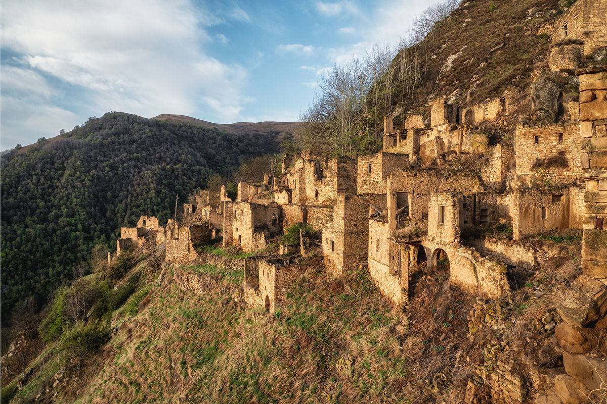
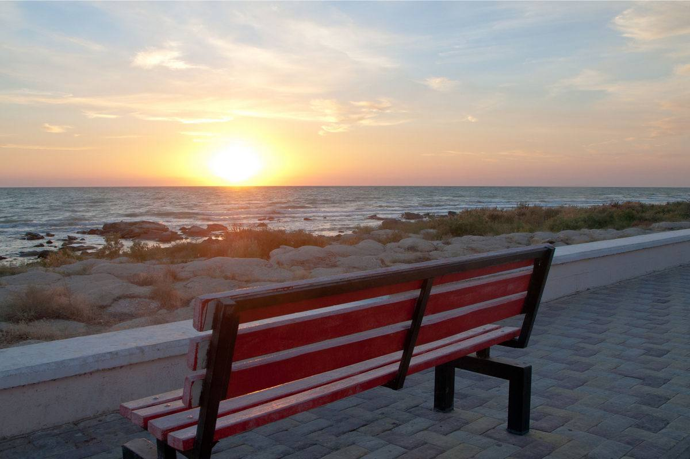
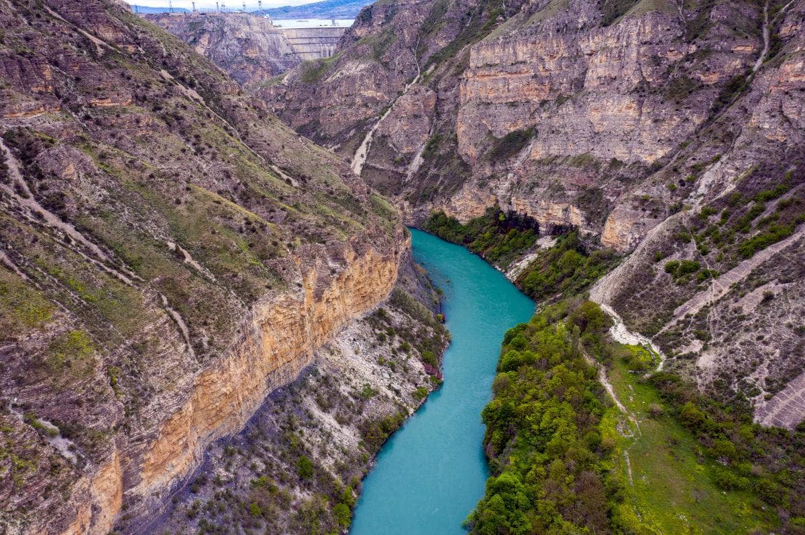
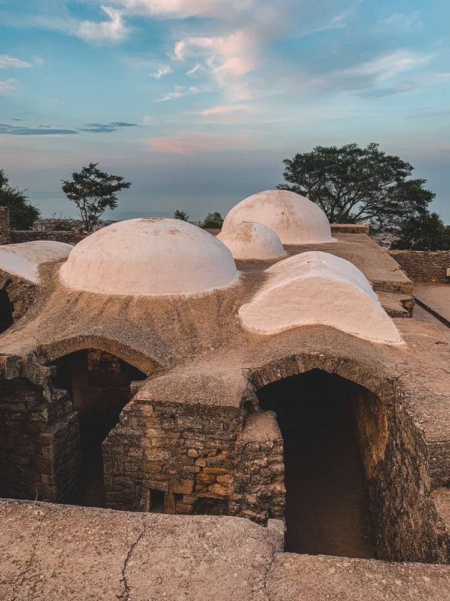
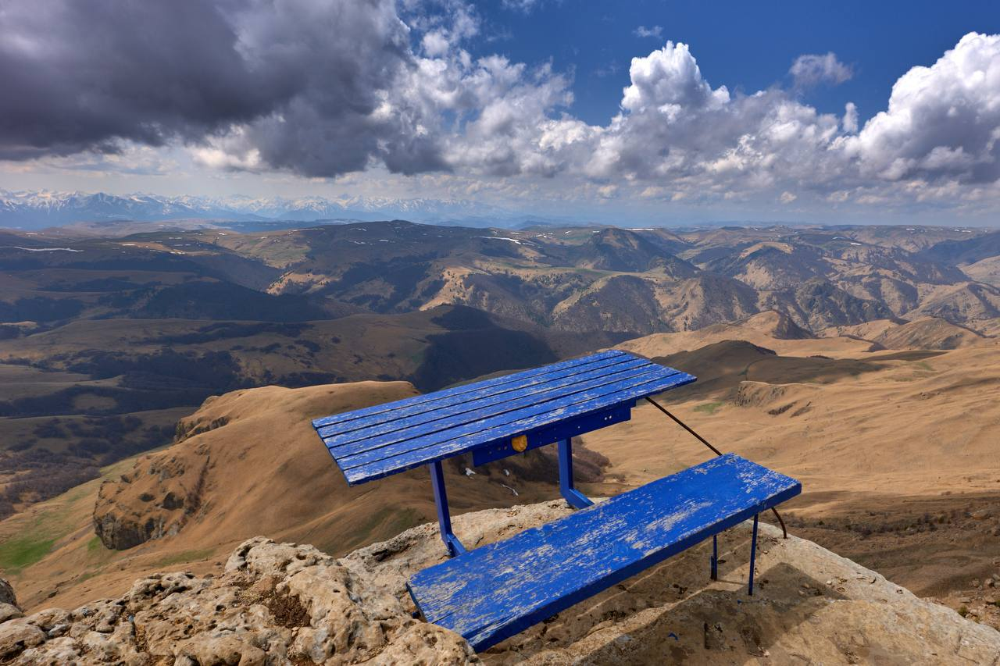
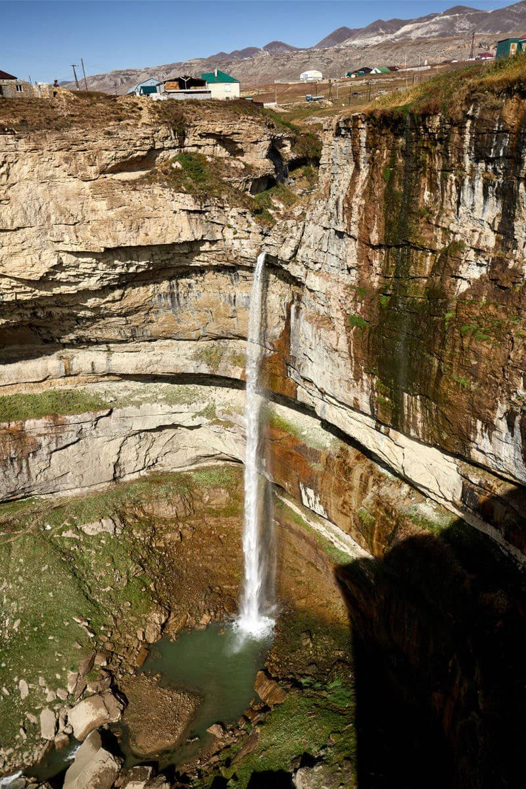

О ТУРЕ






Завораживающие приключение в самой высокогорной республике Северного Кавказа,
которое поможет
выпустить
пар и расслабиться в окружении гор.
Мы встречаем всех гостей в аэропорту/ на вокзале до 11 утра и стартуем!
В тур входит:
- Трансфер из и в аэропорт Махачкалы;
- Проживание на маршруте в комфортных отелях и гостевых домах;
- Завтраки, обеды и ужины;
- Передвижение на комфортном Honda Elysion минивэн;
- Всё необходимые билеты и сборы на маршруте;
- Забота о Вашем комфорте и и безопасности на протяжении всего тура;
- Отличное настроение и масса впечатлений.
Что вас ждет:
- Попадёте в самый старый город России, где Вас перенесёт в Стамбул 16-го века;
- Походите по древним крепостям и аулам-призракам, поражаясь силе времени;
- Загадайте желание на самом глубоком каньоне Европы и откройте для себя самый длинный тоннель под горой;
- Погоняйте на катере по водохранилищу с шоколадными резными берегами, в котором отражаются ГОРЫ;
- Потеряйте голову (и желудок) от гостеприимства местных жителей и вкусов национальной кухни;
- Отведаете форели непосредственно на форелевом хозяйстве — (чуть не остались без пальцев, так было вкусно);
- Наполнитесь силой на Сулакском каньоне, на который успеете посмотреть и со смотровой площадки и с катера;
- Будете в восторге и умилении, и пообещайте себе вернуться.
Что мы предлогаем и этапы подготовки
Мы предлагаем Вам готовый логичный и интересный маршрут, от простого до самого сложного, от 3 до 7 дней ; Всегда можно найти компромисс и для нас очень важно, чтобы Вы, планируя свой отпуск вместе с нами, смогли чувствовать себя комфортно на всех этапах подготовки и участия в туре. Мы достаточно гибки и даже при минимальном составе группы, мы стараемся провести экскурсию ! Мы всегда прислушиваемся к Вашему мнению, вносим в коррективы по маршруту, учитывая мнение каждого участника как до выхода на маршрут, так и на месте.- Заявка и уточнение запроса
- Договор и предоплата
- Знакомство
- Организационные моменты
- Оплата и начало тура
- Связь на маршруте
- Финал поездки, обратная связь, отзывы.